the girl who leapt through time
explained
- number of leaps
- valuable items
- baseball diamond, baseball, bat, mitt
- makoto's alarm clock
- bicycle, broken brake, bike lock password ( ま - こ - と / ma - ko - to)
-
- go all the way back in time
- kaho and kousuke become a couple
- back in time kaho try #1
- back in time kaho try #2
- grandma
- bath
- jumps back to push chiaki out of the way of fire extinguisher
- bike ride #1
- bike ride #2
- bike ride #3
- baseball after teppanyaki
- teppanyaki
- karaoke x 3
- goes back in time for dessert
- open fridge to see dessert
- hit by train
- important dates
- July 13th
- characters
- main: makoto
- chiaki
- kousuke
- three girls (2 forward, 1 shy)
- auntie witch
- makoto's family: mother, father, younger sister (kaho)
- school: professor, classmates
-
- important places to mention
- railroad crossing
- baseball field
- makoto's house
- classroom with chalkboard 'time waits for no one'
- inside the science room
- time travel device 'walnut'
- stack of books falling on makoto
- crowded street crossing
- river where makoto makes her first time jump


 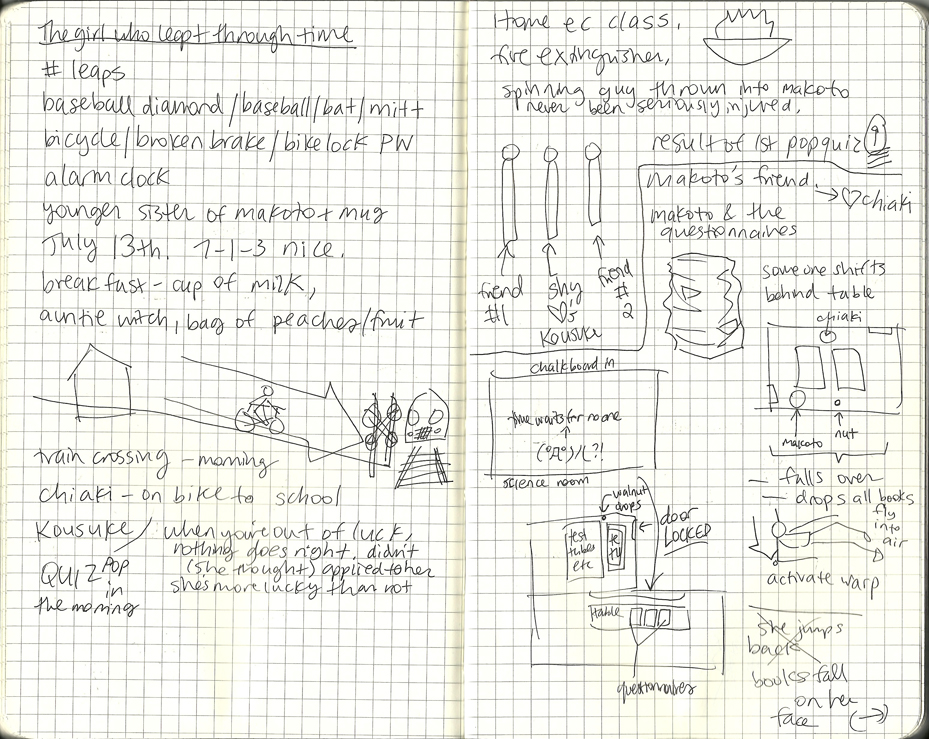
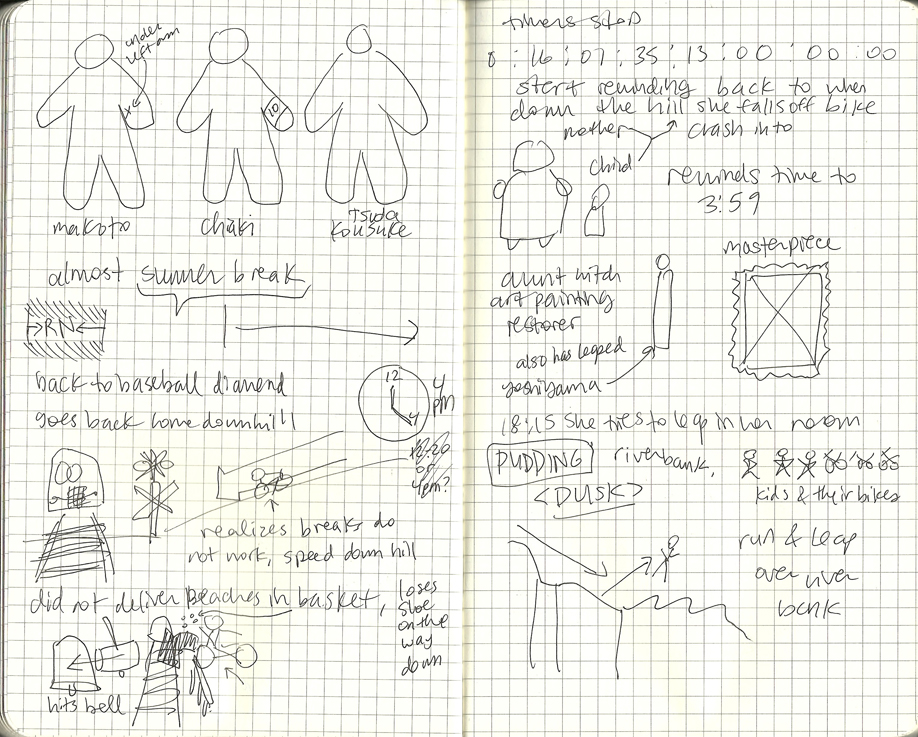
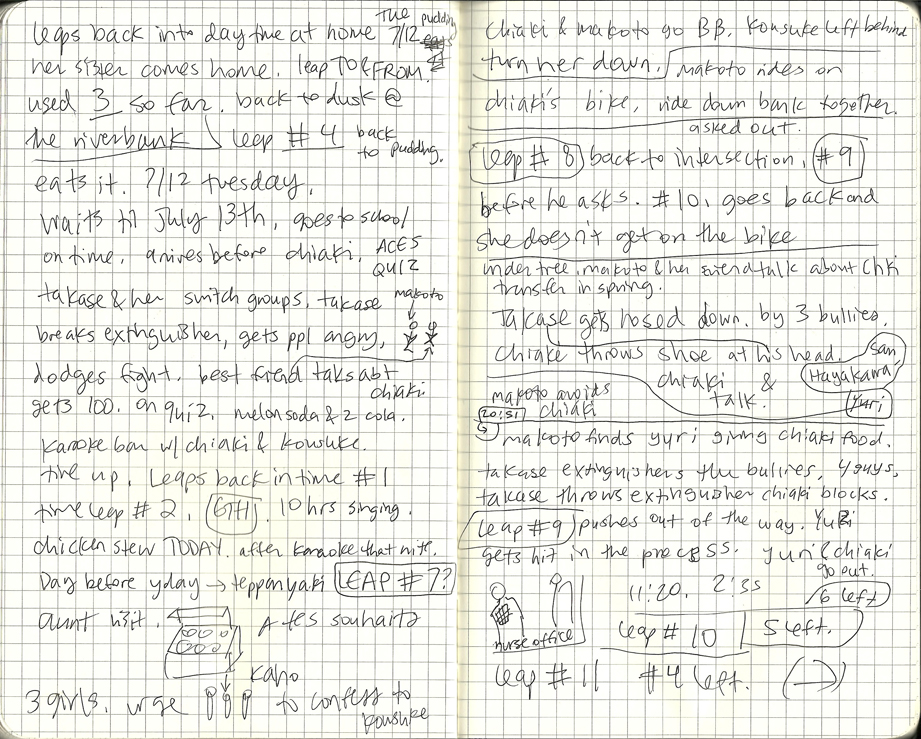
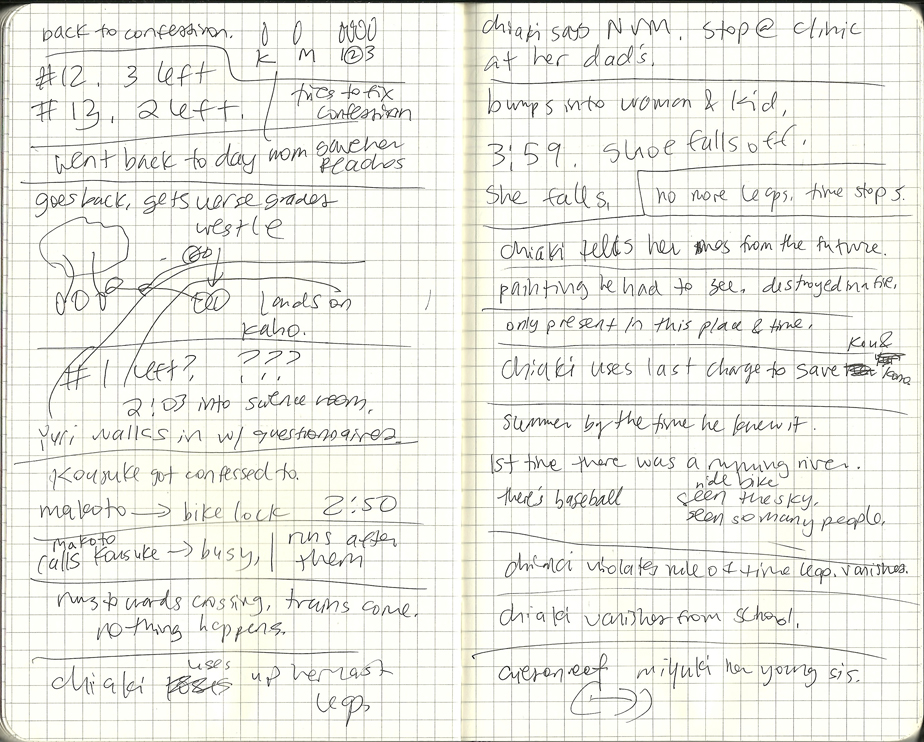
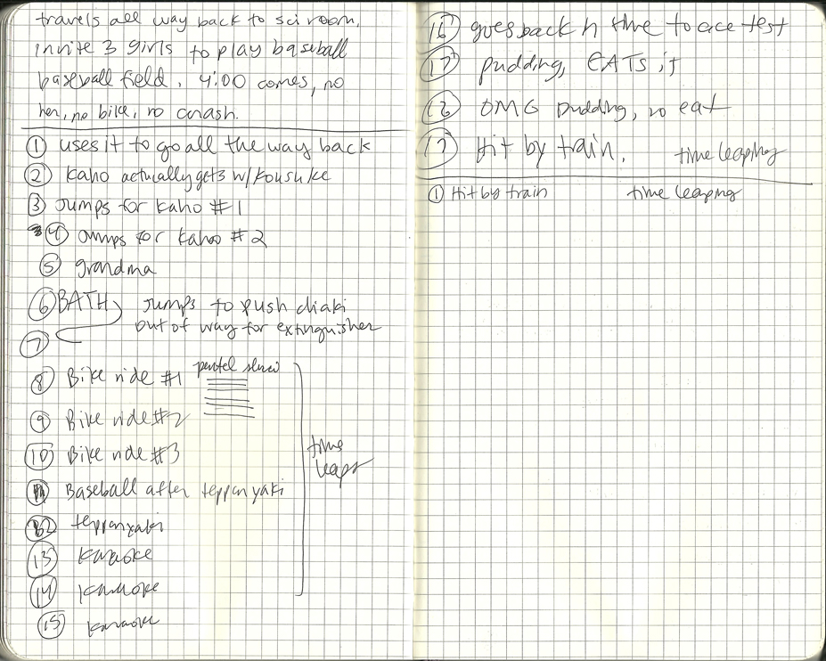
http://johnpolacek.github.com/superscrollorama/
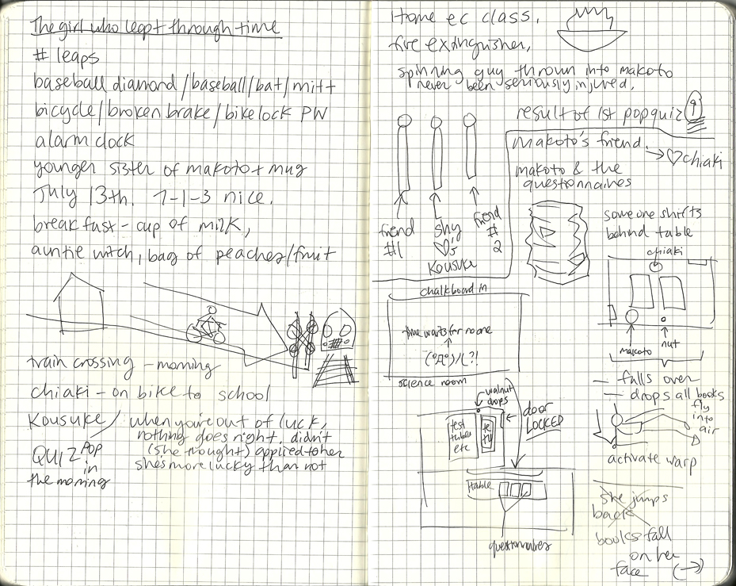
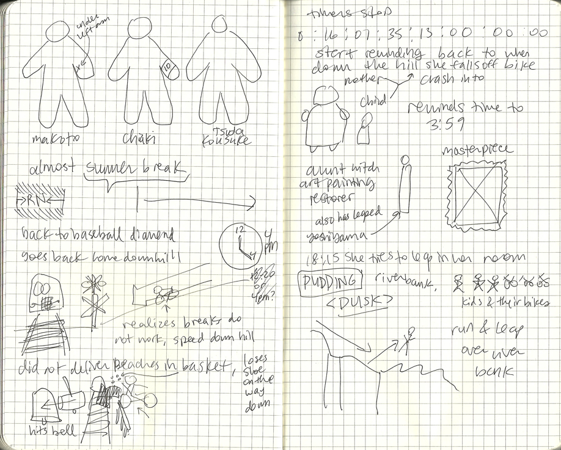
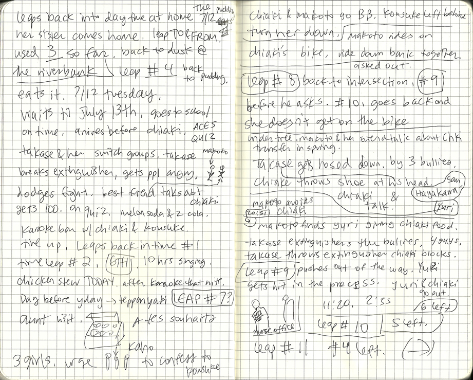
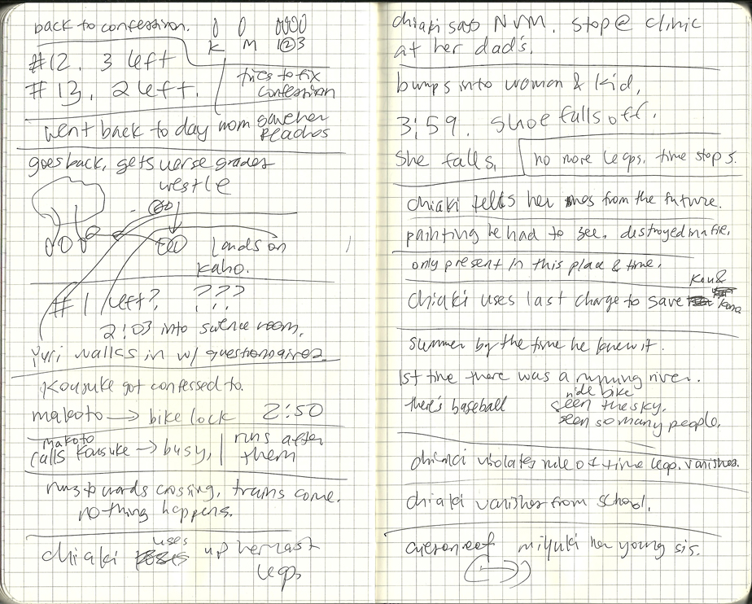
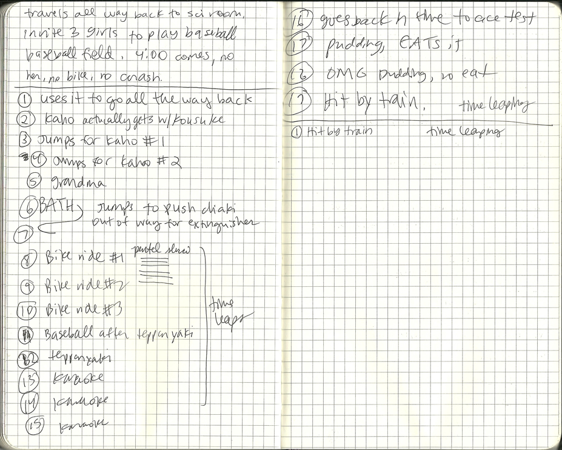
http://johnpolacek.github.com/superscrollorama/